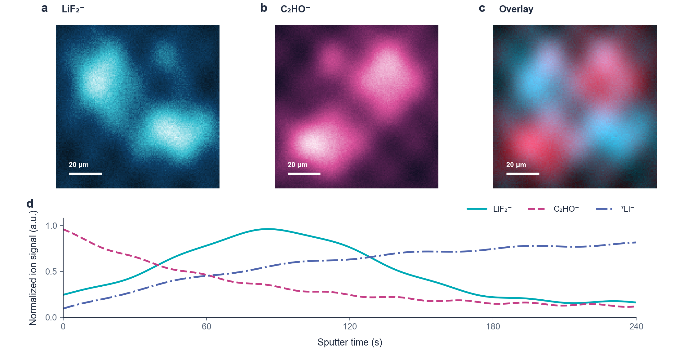

为电池研究者公开的方法与工具
把时间还给研究。
方法属于每个人。
做图、拼图、写综述，总有一部分时间花在重复调整上。我们把这些流程做成免费的技能，让你从手头的材料出发，把精力留给更重要的问题。

从你手里的材料开始
你现在想做哪一件事？
不用记住技能名。看看你现在手里有什么，点对应的一行就行。
点开就能放大
图做出来，可以是这样的。
从循环曲线到不常见的 ToF-SIMS，再到多图拼版。喜欢哪种，点开看细节。


所有样图用虚构数据或原创示意制作。 查看详细说明 ↗
画完，你还可以自己改
SVG 图，像改幻灯片一样微调。
大多数成图都会附 SVG。用免费的 Inkscape 打开，改文字、挪图例、调间距；想改数据，回到原表格重新出图就好。
到 Inkscape 官网免费下载- 1打开 SVG
从样图或自己的项目里找到 .svg，直接用 Inkscape 打开。
- 2改到顺眼
调整文字、图例和元素位置。别用拖动曲线的方式修改数值。
- 3保存并检查
保存 SVG，再按期刊要求导出 PDF；缩到投稿尺寸看一遍。
从这里开始
拿着手头的材料，就能试。
第一次不用记技能名称。下载、安装，然后把论文、表格或图片交给你常用的 AI 软件。
- 01
- 02
- 03
发材料，说一句你想做什么
比如发一份循环数据，让它先看列名和单位；或发几张现成图片，让它帮你拼齐。下面有一句话可以直接复制。
第一句话，可以这样说
我有一份全电池循环数据。请先看看有哪些列、单位和测试条件，告诉我能画什么、还缺什么。能确定的部分先做；不要猜数值。
按软件找步骤
你平时用哪个 AI 软件？
点它的名字，只看这一种软件的做法。看不懂命令时，先看每步上面的中文。
“技能”就是交给 AI 的操作说明；本项目还附有画图脚本。你不需要先学会写代码。
Codex已经在 Codex 里做科研
安装和基本调用已在我们的 Windows 电脑上试过。
- 下载上面的完整技能包，解压。
- 打开解压后的文件夹，点地址栏，输入 powershell，按回车。
- 在弹出的窗口粘贴下面这行，按回车。安装成功后，新开一个 Codex 任务。
powershell -NoProfile -File .\install.ps1用 Mac/Linux，或已经装过旧版？
Mac/Linux：在解压目录的终端运行下面这行。
sh install.sh提示“同名技能已存在”时，先确认旧版不需要保留。想用新版覆盖它，在同一窗口运行：
powershell -NoProfile -File .\install.ps1 -OverwriteKimi Code用 Kimi 的代码助手
安装位置按官方文档核过；完整画图任务还没在客户端测试。
- 下载并解压上面的完整技能包。
- 在解压后的文件夹打开命令窗口，复制与你电脑系统对应的命令。
- 重开 Kimi Code，发一份表格，说“先帮我检查数据，再画图”。
powershell -NoProfile -File .\install.ps1 -Agent KimiCodesh install.sh --agent kimiWorkBuddy喜欢在软件界面里点选导入
导入入口按官方文档核过；完整画图任务还没在客户端测试。
- 下载 WorkBuddy 专用包，并解压。里面每个小 ZIP 对应一个技能。
- 在 WorkBuddy 点“技能 → 添加技能 → 上传技能”。
- 有数据要画图，选文件名含 battery-review-figure 的小 ZIP；有现成图要拼版，选文件名含 battery-figure-assemble 的小 ZIP。一次传一个。
DeepSeek Harness用 DeepSeek 的开发者工具
文件放置方法按官方文档核过；完整任务还没在客户端测试。
- 下载并解压上面的完整技能包。
- 在解压后的文件夹打开命令窗口，复制与你电脑系统对应的命令。
- 确认 Harness 的技能功能已启用，重开会话，用一份小数据试画。
powershell -NoProfile -File .\install.ps1 -Agent DeepSeekHarnesssh install.sh --agent dsh豆包平时用豆包看文件、聊天
软件已经能聊天？本项目不需要你再申请一个专用账号或密钥。 需要排查安装问题？看详细说明 ↗
新手常问
第一次用？这里有答案。
API Key 是什么？我一定要有吗？
它是某些 Agent 连接模型服务时使用的密钥。是否需要 Key，取决于你用的软件和登录方式。先照该软件的官方步骤完成账号或模型设置，再安装本项目技能。
需要把密钥粘到网页或聊天框吗？
不要。这是静态介绍网站，没有填写密钥的表单。密钥只应放在你所用软件的官方设置位置，不要粘到聊天、截图或公开仓库里。
我不会写 Python，还能用吗？
可以先用综述规划、文献整理和写作技能。要从数据生成图或拼版时，需要按相应技能说明安装 Python 依赖；你可以把数据和任务交给 Agent，让它检查并解释步骤。
能直接把论文图发给它重画吗？
可以请它分析构图、配色和表达方式，再用你有权使用的原始数据重新制作。不要把别人的成图直接当作自己的素材发布；数值、来源和授权都要核对。
按阶段分工
13 个技能，每个都有自己的说明。
第一次使用，先选上面的任务就够了。需要做完整综述时，再按下面的阶段逐个打开。
一起把它做得更好
好方法，应该走出一个实验室。
我们先把自己踩过的坑、做过的图和能复用的步骤整理出来。欢迎你拿去用，也欢迎把新的问题带回来。工具越多人一起打磨，大家就越能把时间花在真正值得想的地方。
项目作者与合作
郭硕 × 姜金龙
Shuo Guo · Jinlong Jiang上海理工大学能源材料科学研究院。我们把电池综述写作与科研绘图中反复遇到的问题整理成开放工具，欢迎同行一起完善。
查看作者与合作说明 ↗